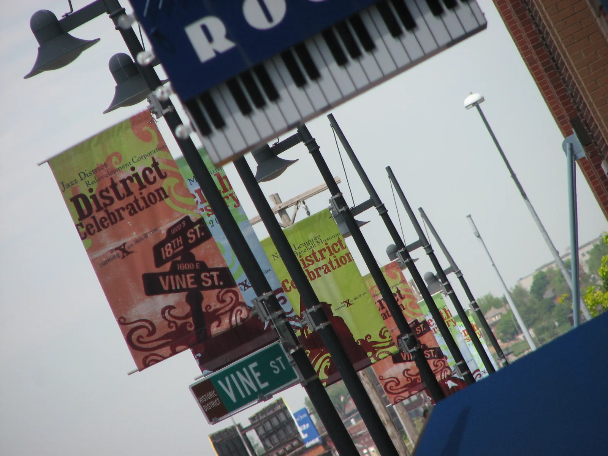

Urban Photo Safari 2008 · Photo by Luis Ulloa
The 2008 editionA city, a camera,
A city, a camera,
four hours to see.
Back in Kansas City, photographers set out to find their own view of the streets.
WhereKansas City
WhenSaturday, May 17, 2008
The formatFour hours · ten selections
2008 result
For the first time, the Safari ended in a tie. Kevin Sisemore and Alistair Tutton shared the win.
See the results ↗The winning frames
Full vote tally ↗Two views. One result.


Contestant entries
Explore photographs ↗